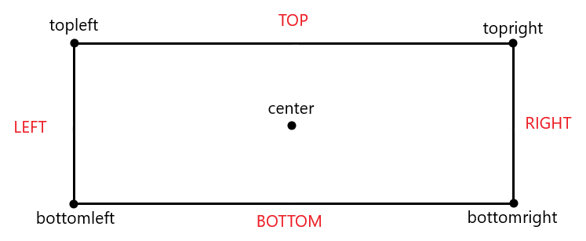
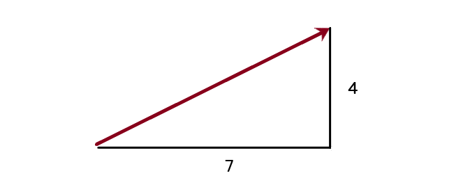

C5 - Les rectangles
Un rectangle est un ensemble de points et de coordonnées pouvant être relié à une surface. Dans ce chapitre, nous apprendrons à créer et utiliser un rectangle
1 - Création et points
Créer un rectangle à partir d'une surface
Il est possible de créer un rectangle à partir d'une surface avec la méthode get_rect(coord), sachant que coord représente la position du rectangle par un tuple de coordonnées \((x, y)\). En reprenant la voiture du chapitre précèdent:
voiture = pygame.image.load("dossier_images/taxi.png").convert_alpha()
voiture_rect = voiture.get_rect((screen_width / 2, screen_height / 2))
De cette manière, on obtient un rectangle qui possède les même dimensions que la surface associée (içi voiture).
Positionner une image à partir d'un rectangle
Ce qu'il serait idéal de faire est de positionner voiture selon voiture_rect. Pour cela, au lieu de spécifier un tuple de coordonnées dans la méthodes blit, on donne le rectangle créé.
screen.blit(voiture, voiture_rect)
voiture sera ainsi positionné selon l'argument passé à la méthode get_rect (dans le cas précédent, les coordonnées sont screen_width / 2 et screen_height / 2).
Info
Il est plus pratique de positionner un élément selon un rectangle qui possède les même dimensions plutôt que des valeurs numériques constantes puisque ce rectangle est une variable et peut être ainsi modifié. Signifiant en d'autres termes qu'un rectangle nous permettra de déplacer des surfaces facilement et avec précision.
Positionner avec précision
Comme nous l'avons dit auparavant, les surfaces sont positionnées par rapport à leur coin supérieur gauche. Or nous pouvons positionner notre rectangle à partir de 5 points différents:
- topleft : le coin supérieur gauche (par défaut)
- topright : le coin supérieur droit
- bottomleft : le coin inférieur gauche
- bottomright : le coin inférieur droit
- center : le point central
Nous pouvons visualiser un rectangle ainsi :

On spécifie le point selon lequel le rectangle est positionné à l'initialisation de celui-ci:
haut_gauche = voiture.get_rect(topleft=(0, 0))
haut_droit = voiture.get_rect(topright=(screen_width, 0))
bas_gauche = voiture.get_rect(bottomleft=(0, screen_height))
bas_droit = voiture.get_rect(bottomright=(screen_width, screen_height))
au_centre = voiture.get_rect(center=(screen_width / 2, screen_height / 2))
Pour traduire ce que nous avons écrit, nous créons cinq rectangles. On place le coin supérieur gauche du premier au point (0, 0). On place le coin supérieur droit du second au point (screen_width, 0). On place le coin inférieur gauche du troisième au poit (0, screen_height). On place le coin inférieur droit du quatrième au point (screen_width, screen_height). Enfin, on place le point central du dernier au centre de l'écran. Nous pouvons ainsi essayer d'afficher la surface voiture à ces différentes coordonnées:
screen.blit(voiture, haut_gauche)
screen.blit(voiture, haut_droit)
screen.blit(voiture, bas_gauche)
screen.blit(voiture, bas_droit)
screen.blit(voiture, au_centre)
2 - Modifier la position d'un rectangle
Accéder aux points du rectangle
Il est possible d'accéder à la valeur des cinq points vus auparavant d'un rectangle. Ces points font partie de ses attributs :
print(au_centre.center)
print(au_centre.topleft)
print(au_centre.topright)
print(au_centre.bottomleft)
print(au_centre.bottomright)
Cependant, ces différents points sont une combinaison de deux coordonnées. Or, il est également possible d'accéder à ces coordonnées individuellement :
print(au_centre.left) # Peut être simplifié par au_centre.x
print(au_centre.top) # Peut être simplifié par au_centre.y
print(au_centre.right)
print(au_centre.bottom)
print(au_centre.centerx)
print(au_centre.center)
Déplacer un rectangle : coordonnée
L'avantage de ces coordonnées est qu'elles peuvent êtres modifiées comme bon nous semble. Elles fonctionnent comme des variables normales auquelles nous pouvons affecter une nouvelle valeur. Ainsi, nous pouvons déplacer notre voiture vers le haut en décrémentant de manière continue la valeur y de son rectangle :
running = True
background = pygame.image.load("dossier_images/background.png").convert_alpha()
voiture = pygame.image.load("dossier_images/taxi.png").convert_alpha()
voiture_rect = voiture.get_rect(center=(screen_width / 2, screen_height))
while running:
# Boucle évènementielle içi
screen.blit(background, (0, 0))
screen.blit(voiture, voiture_rect)
voiture_rect.y -= 1
# Update et tick ici
Petit problème, notre voiture finit par sortir de l'écran. En effet la coordonnée \(y\) est constamment décrémentée, cette valeur finit ainsi par être négative. On peut remédier à cela grâce à une condition if. En effet, SI le bas du rectangle dépasse le haut de l'écran (le coordonnée bottom < 0), alors on replace le haut du rectangle en bas de l'écran (coordonnée top => screen_height) :
running = True
background = pygame.image.load("dossier_images/background.png").convert_alpha()
voiture = pygame.image.load("dossier_images/taxi.png").convert_alpha()
voiture_rect = voiture.get_rect(center=(screen_width / 2, screen_height))
while running:
# Boucle évènementielle içi
screen.blit(background, (0, 0))
screen.blit(voiture, voiture_rect)
voiture_rect.y -= 1
if voiture_rect.bottom < 0:
voiture_rect.y = screen_height
# Update et tick ici
Nous pouvons évidemment rendre notre voiture plus rapide en décrémentant la coordonnée y avec une valeur plus élevée que 1:
running = True
background = pygame.image.load("dossier_images/background.png").convert_alpha()
voiture = pygame.image.load("dossier_images/taxi.png").convert_alpha()
voiture_rect = voiture.get_rect(center=(screen_width / 2, screen_height))
vitesse = 4
while running:
# Boucle évènementielle içi
screen.blit(background, (0, 0))
screen.blit(voiture, voiture_rect)
voiture_rect.y -= vitesse
if voiture_rect.bottom < 0:
voiture_rect.y = screen_height
# Update et tick ici
Exercice
Supposons que nous souhaitons que notre voiture roule dans l'autre sens (vers le bas). Commencez par retourner la surface voiture en lui faisant subir une rotation. Utilisez un rectangle et faites-attention à ce que sa coordonnée y évolue correctement. Lorsque la voiture sortira de l'écran, elle devra encore une fois revenir à son point de départ (en haut de l'écran cette fois-çi).
running = True
background = pygame.image.load("dossier_images/background.png").convert_alpha()
voiture = pygame.image.load("dossier_images/taxi.png").convert_alpha()
voiture = pygame.transform.rotate(voiture, 180)
voiture_rect = voiture.get_rect(center=(screen_width / 2, screen_height))
vitesse = 4
while running:
# Boucle évènementielle içi
screen.blit(background, (0, 0))
screen.blit(voiture, voiture_rect)
voiture_rect.y += vitesse
if voiture_rect.top > screen_height:
voiture_rect.bottom = 0
# Update, tick et méthodes blit ici
Déplacer un rectangle : point
Il est également possible de déplacer un rectangle à partir de l'un de ses 5 points (topleft, bottomright, etc). Pour cela, il est plus convenable d'utiliser un vecteur à deux dimensions. L'objet Vector2 se situe dans le module math de Pygame :
vecteur_voiture = pygame.math.Vector2(x, y)
\(x\) et \(y\) représentent respectivement la distance \(x\) et \(y\) parcourue par le vecteur. Par exemple voiçi une représentation possible du vecteur \((7, 4)\) :

Il est ainsi possible d'appliquer un vecteur sur l'un des points d'un rectangle. Par exemple, en supposant un rectangle voiture_rect, le code çi-dessous:
vecteur_voiture = pygame.math.Vector2(1, 2)
while running:
# Boucle évènementielle
voiture_rect.center += vecteur_voiture
# Update, tick et méthodes blit
Equivaut plus ou moins à :
vitesse_x = 1
vitesse_y = 2
while running:
# Boucle évènementielle
voiture_rect.centerx += vitesse_x
voiture_rect.centery += vitesse_y
# Update, tick et méthodes blit
Remarquons qu'utiliser un vecteur est plus court à écrire. De plus, les vecteurs possèdent certaines méthodes qui pourraient peut-être nous être utiles. Par exemple, vous pouvez facilement obtenir la longueur (la norme) de votre vecteur grâce à la méthode length. Tout comme vous pouvez rotater votre vecteur avec la méthode rotate.
Nous pouvons facilement modifier les distances \(x\) et \(y\) d'un vecteur (qui influencent le déplacement du rectangle). Ainsi, en supposant qu'on veuille que notre voiture se déplace en "L":
def swap_values(vector: pygame.math.Vector2):
vector.x, vector.y = vector.y, vector.x
SPEED = 5
voiture_rect = voiture.get_rect(bottomleft=(0, screen_height))
voiture_rect.centerx = screen_width / 2
vecteur_voiture = pygame.math.Vector2(0, SPEED)
while running:
# Boucle évènementielle
if voiture_rect.bottom > screen_height:
voiture_rect.bottom = screen_height
vecteur_voiture.y = -SPEED
if voiture_rect.left < 0:
voiture_rect.left = 0
vecteur_voiture.x = SPEED
if voiture_rect.centerx > screen_width / 2 or voiture_rect.centery < screen_height / 2:
swap_values(vecteur_voiture)
voiture_rect.center = (screen_width / 2, screen_height / 2)
voiture_rect.topleft += vecteur_voiture
# Blit, update et tick
Dans le morceau de code précèdent, on écrit une fonction swap_values qui prend en argument un vecteur et échange les valeurs \(x\) et \(y\) de ce vecteur.
Note
Il faut bien noter l'importance des signes (positif ou négatif) à l'égard des valeurs \(x\) et \(y\) d'un vecteur. Si \(x\) est positif, le rectangle se déplace vers la droite. Si \(x\) est négatif, le rectangle se déplace vers la gauche. Dans le cas où \(x\) est nul, le rectangle ne se déplace plus sur l'axe \(x\) (horizontalement).
Warning
Ne jamais oublier que le point \(0\) est situé sur le bord supérieur de l'écran ! Ainsi, si \(y\) est positif, le rectangle se déplace vers le bas et non vers le haut. Si \(y\) est négatif, le rectangle se déplace vers le haut. Dans le cas où \(y\) est nul, le rectangle ne se déplace plus sur l'axe \(y\) (verticalement).
3 - Collisions
Colliderect
Un des autres aspects pratiques des rectangles est que l'on peut facilement vérifier si une collision a lieu entre deux rectangles grâce à la méthode colliderect(rectangle). En prenant cette image, nous pouvons essayer de simuler un accident. Mais avant cela, nous allons mettre à l'épreuve les connaissances acquises :
{kind=link}
Exercice
Votre mission, si vous l'acceptez, est tout d'abord d'afficher la voiture orange (Car.png) et le taxi (taxi.png). Ces deux images devront posséder leur propre rectangle et doivent obligatoirement finir par se superposer (comme vu dans la vidéo çi-dessus). Les deux voitures devront être centrées horizontalement. Le taxi doit être vers le bas de l'écran et la voiture orange vers le haut de l'écran. Faites bien attention à ce que la voiture orange soit tournée afin de faire face au bas de l'écran. Les deux voitures doivent se déplacer à une vitesse de 4 pixels par itération.
taxi = pygame.image.load("dossier_images/taxi.png").convert_alpha()
taxi_rect = taxi.get_rect(center=(screen_width / 2, screen_height - 50))
voiture_orange = pygame.image.load("dossier_images/Car.png").convert_alpha()
voiture_orange = pygame.transform.rotate(voiture_orange, 180)
orange_rect = voiture_orange.get_rect(center=(screen_width / 2, 50))
while running:
# Boucle évènementielle
taxi_rect.y -= 4
orange_rect.y += 4
screen.blit(background, (0, 0))
screen.blit(voiture_orange, orange_rect)
screen.blit(taxi, taxi_rect)
# Upadate et tick
Quand les deux voitures entrent en collision l'une avec l'autre, aucune ne subit de dégât. Or, ceçi est contre les lois de la physique ! Non ! Les deux voitures devraient exploser lorsque la collision a lieu. Prenons cette image et mettons la méthode colliderect en action !
{kind=link}
La syntaxe pour colliderect est:
rectangle1.colliderect(rectangle2)
Et cette méthode renvoie une valeur booléene qui vaut True si une collision a lieu entre rectangle1 et rectangle2, ou False dans le cas contraire. Il ne nous reste plus qu'a modifier les images stockées dans les variables voiture_orange et taxi si la collision a lieu:
taxi = pygame.image.load("dossier_images/taxi.png").convert_alpha()
taxi_rect = taxi.get_rect(center=(screen_width / 2, screen_height - 50))
voiture_orange = pygame.image.load("dossier_images/Car.png").convert_alpha()
voiture_orange = pygame.transform.rotate(voiture_orange, 180)
orange_rect = voiture_orange.get_rect(center=(screen_width / 2, 50))
intact = True
while running:
# Boucle évènementielle
if taxi_rect.colliderect(orange_rect):
intact = False
taxi = voiture_orange = pygame.image.load("dossier_images/explosion.png").convert_alpha()
if intact:
taxi_rect.y -= 4
orange_rect.y += 4
screen.blit(background, (0, 0))
screen.blit(voiture_orange, orange_rect)
screen.blit(taxi, taxi_rect)
# Upadate et tick
Qui donne comme résultat final :
Collidepoint
Parfois, ce n'est pas une collision entre deux rectangles qu'on souhaite tester mais une collision entre un rectangle et un point \((x, y)\). Ce sera notamment le cas quand on souhaitera plus tard tester si il y une collision entre le curseur et un rectangle. Pour cela, nous utilisons la méthode collidepoint(point) associée au rectangle. A titre d'exemple, supposons que le point \((0, 0)\) mène à la destruction certaine de la voiture orange créée plus tôt (en conservant la position que nous lui avons donné). Et que notre voiture orange finit justement par atteindre ce point en se déplacant continuellement vers la gauche :
while runnning:
# Boucle évènementielle
if orange_rect.collidepoint((0, 0)):
voiture_orange = pygame.image.load("dossier_images/explosion.png").convert_alpha()
else:
orange_rect.x -= 5
Conclusion
Nous venons d'aborder l'une des parties les plus importantes de Pygame. Les rectangles, qui s'obtiennent généralement à partir d'une surface grâce à la méthode get_rect. Nous pouvons repositionner un rectangle à tout moment en affectant une nouvelle valeur à l'un de ses points (topleft, center, bottomright, etc) ou à l'une de ses coordonnées individuelles (right, top, centery, etc). Les rectangles sont parfois accompagnés d'un vecteur Vector2 si il doit effectuer des déplacements d'une certaine compléxité. Nous pouvons facilement tester une collision entre deux rectangles grâce à la méthode colliderect. Cependant, toujours aucun moyen d'interagir avec les éléments de l'écran ! Sans interactions, ce que nous construisons n'est pas un jeu vidéo mais juste une vidéo. Nous remédierons à cela dans le prochain chapitre.